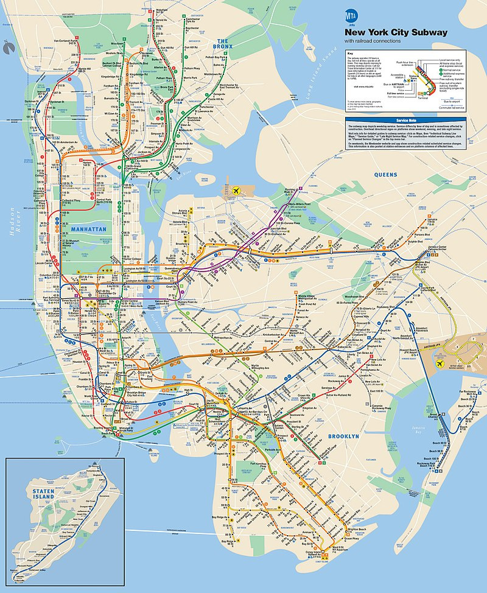
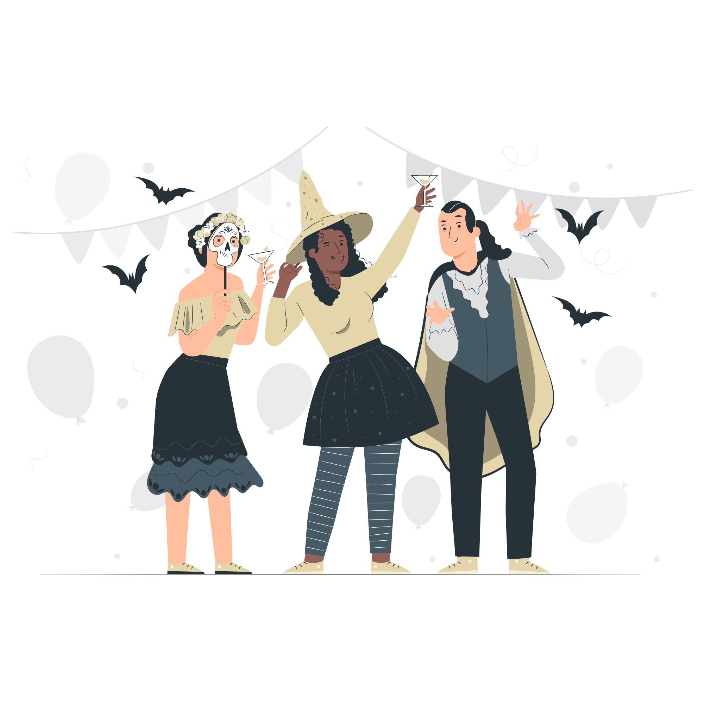

< h1 >
Wizard Retreat Weekend Project
< /h1 >
Design and Develop a website for the Urban Wizard Weekend Retreat Project
Role: Head of Research, Design and Engineering
Time Line: July 2021 - Oct 2022
About the Client

The Group That Shall Not Be Named (TGTSNBN)
It’s the world’s largest in-person Harry Potter meetup group. They have over 4,000 members and hold events threw out the Metro of New York City. .
The Problem
One of the main problems is how to get New Yorkers to know they can get to location that isn't the subway line.
The Goal
Make a website that users get the information they need to feel enable to buy tickets to the event.
The Research
Competitor Analysis
I reviewed Pax unplugged site. They run a large game board conference the parent company runs events that included Pax which has over 70k guest at both east and west coast events. As well as New York Comic Con which hosts 200k guest. I wanted to review how a great company and runs events lays out their website.
The home page is straightforward with easy-to-read information about the event.
The hotel and travel page gives little information on it however it provides links to more information
Interivews
From prior events the group has done I reviewed user pain points they had when the group used to host a conference in Laconia NH
One of the leading issues they had with ticket sells was location and how people would feel they could get to the location
Overall User Demographics: Women, traveling alone, well education, upper-middle-class, liberal, carless, LGBTQ
Persona and Journey Map
From the data I had review here is my User Persona and Empathy Map

From other events we’ve hosted we know travel is a big worry for our users they want to how to get to the location. Most of our users don’t know how to drive let alone own a car. For larger events, we often get members from other counties to well fly into an event.
Analysis of Hotel for the Event
For this event, the hotel is a part of the event as much as the theme is so selling why this location was just as imported as it’s a Harry Potter weekend. Here are some key points from learning about the Guest House, where the event will be held
Key points from the hotel
- The Guest House Feels like going to large home
- They take pride in there food and handle all dietary needs
- The rooms are all unquie and pretty
- Its in a remote location no mass transit close by
- The area around the hotel is wooded in fall the area well be full of fall colors.
The Answer
I was the solo designer and Developer on the project please feel free to take a look at this site.